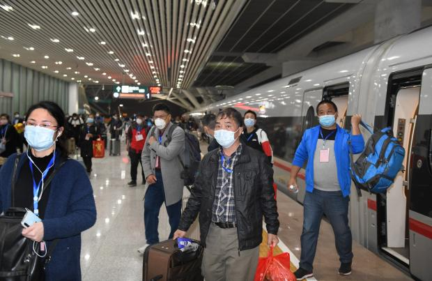
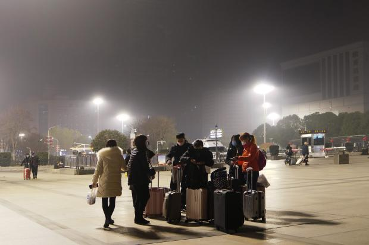
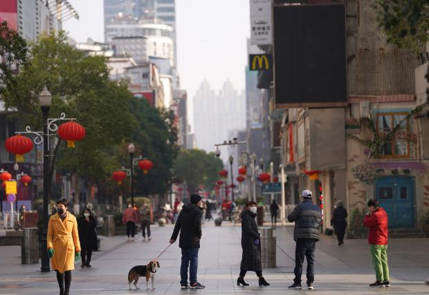

武汉封城记（六） 3月15日至3月24日
作者：方方
3月15日：这些天，议论复工的人越来越多
3月15日。
继续大晴。天空明亮，总会让人心情愉悦。前几天，同住文联大院的姨侄女，给我送来一些面点，包子烧麦什么的。吃了两天，觉得太理解北方人为什么特别愿意吃面食了。因为吃面食实在是很方便。面食的半成品很多，稍微加工，便可饱腹。比起做饭做菜，又方便又省事（顺便告诉在微博上那些严厉质问我为什么武汉不允许出门，我却可以到文联拿东西的人：我家就在文联大院内哦，这就跟你可以到小区门口拿菜一样。统一回答了，就别再啰嗦！）。得幸我对面食还挺喜爱。这两天，大家都在聊做饭麻烦的事，做完饭后，还要收拾厨房。而以前，叫个外卖，吃完饭盒一扔，啥就解决了。
今天我的朋友JW传来她弟弟李先生写的文章。李先生有两个朋友都是老年合唱团的。在武汉，很多退休老人都会参加一些文娱活动。尤其我这代人，青少年时代在“文革”中度过，那时各学校都有文艺宣传队，所以能唱会跳的人特别多。现在，退休后，人清闲下来，这些艺术细胞又全都调动了起来。每逢节假日，老年朋友们，非常活跃，到处演出或是聚会，一轮又一轮，这是他们很享受的晚年生活。今年，也同样如此。但是，来势凶猛的新冠病毒，却将他们中很多人击中。李先生写下了他对两位朋友的怀念。文章的第一句便是：“我怎么也想不到，包杰和苏华健这两个身边的朋友，在这个新年，生命会戛然而止。”
在武汉，有个很让人感动的故事：儿子病了，九十岁的老奶奶担心其他家人被感染，自己独立照顾在医院门诊部等待床位的儿子。老奶奶守了儿子五天五夜，终于等到床位。却因为病情加重，儿子住进了ICU。这位名叫徐美武的老奶奶，找护士借了纸笔，给儿子写了一封信。信曰：“儿子，要挺住，要坚强，战胜病魔。要配合医生治疗，呼吸器不舒服，要忍一忍，以便恢复。如果血压正常，鼻孔吸氧，请求医生。忘记给现金，托医生带上伍佰元，可托人买日常用品。”当时读到这封信的人，无不落泪。这就是母亲啊！哪怕儿子已经六十多岁，但在母亲心里，仍然是她的孩子。这个儿子就是李先生的朋友包杰。遗憾的是，这封信包杰并没有看到，他第二天便与世长辞，丢下所有亲人，还有他坚强的令人尊敬的老母亲。
李先生说：“省黄埔军校同学会所属的艺术团开始为春节联欢准备节目，包杰因为也是黄埔后代，经人介绍，来到了艺术团。包杰一来，就显得很突出。他嗓子很好，声音有训练，唱得有感情，所以没两天，大家就公推他担任领唱。今年元月17日下午，省黄埔举办春节联欢会，他圆满完成了领唱任务。当时，他就在我的身边。”但是，包杰在元月18号又参加另一个联欢活动，在那里他被感染。“同时感染的有三人，其中有两人罹难。”
武汉市还有另一个民间合唱团，叫“希文合唱团”。它成立于1938年，最初由希利达女中和文华中学师生组成。改革开放后，老人们又重组“希文合唱团”，成员不再只是这两所学校的人，已面向了全社会。希文合唱团在今年元月也有不少活动。李先生说，他和华健都是男高音部的，关系密切。“元月9日，希文合唱团部分团员在范湖唱歌聚餐，这是我最后见到华健。”又说：“他平时在群里很活跃的，现在泡都不冒一个，我与朋友打电话他不接，微信也不回，大家都觉得反常，感觉不妙。”此后，苏华健便一直处于失联状态。直到讣告传来。苏华健去世于3月6日。网上现在还能搜到“希文合唱团”的歌，有一支《牵手》，唱得尤其令人感动。或许都是过来人，经历过风雨，才能如此动情。歌中说：“所以牵了手的手，来生还要一起走；所以有了伴的路，没有岁月可回头。”一首歌，唱成了自己的人生。
我老早就听邻居说，老年合唱团有不少人被感染。因为元旦和春节，一直都是他们演出活动的频繁期，而他们的年龄本来也属易感人群。李先生在文章中放上了包杰和苏华健的照片，两人虽已退休，却依然满脸英气。如果有预警，他们还会频繁参与这些娱乐活动，还会继续聚餐吗？这些六十来岁的人，以现在的生活条件，加上他们丰富的娱乐活动，再活二十年又有什么问题。“人不传人，可防可控”，致多少人走上不归之路。一想到这些，我就会自问：难道我们这些活着的人，为让自己生活得轻松，就可以不帮助他们这些枉死者追责吗？追责，是一件必须要做的事！
这几天的疫情，依然向好。整个武汉，每天新增确诊连续在个位数上。在只剩几个患者的情况下，人们出门以及复工的欲望便更为强烈。这些天，议论疫情的人越来越少，而议论复工的人越来越多。因为封城，已有很多企业和很多家庭，承受不起了。时间过于长久，人们也过于压抑，政府理应有更为灵活的对策才是。好在，今天看到一些早已归零的地区，以点对点的方式，派大巴车送人外出工作。而武汉的公交，从明天起，也将正式为部分企业返岗员工提供通勤服务。这些都是大好消息。再不复工，再不开城，不是国家经济扛不扛得住的问题，是很多人家能不能吃得上饭的问题。
说说我自己这两天面对的事吧。
我的微博开封后，因为一直喜欢微博这种方式，所以每天的记录我都会发到微博上。但从前几天开始，突然遭到以千而计人数的叫骂。阵势很大，无厘头加下流。我也经历了从奇怪到愤怒的过程，及至今天，我已经没有了感觉。因为我已经看出来，他们大多过来叫骂的人，根本没有看过我写过什么。他们只是听到某些人断章取义并且充满恶意的解读，然后就来骂了。他们为骂而骂，把骂人当作了游戏。当然，也有几个貌似讲道理的，可这道理只建立在他选择相信的谣言上。按照谣言的逻辑来讲道理，这就没理可讲。因为有些话又蠢又脏，太没看相，我拉黑一些人。今天下午，突然觉得让这些叫骂和议论保留下来也挺不错。
你可以很清晰地看到这些叫骂的人是谁，他们的头像是什么样的，有什么共同特点，他们来自什么吧或什么圈，他们共同关注的人是谁，他们经常转谁的微博，与谁互动，你可以像发现病毒的源头一样，发现感染源从哪开始，什么时间同步叫骂，什么人在背后鼓动、教唆以及组织，他们曾经还叫骂过什么人，他们最推崇谁，最服从谁的指挥，以及他们语言出处从哪儿来，与谁的语气大体相同，还有语言在叫骂中的变化，诸如此类。观察这样的一群人，会颇有所得。你甚至可以上溯七、八年，或许能找到当年号召学生们到网上发挥“正能量”的帖子，甚至，你可以发现被推荐给他们当导师的一堆名字。记得我曾经跟某部门的一位负责人说：你们怎么可以让这样一些人去指导学生呢？他们中有的人就是流氓呀。可惜，对方没有听。现在，当年的那些被号召上网展示正能量的人，被指导成今天的他们。走在人群中，他们很多人不坏，但是进到网络上，他们会无限放大自己的阴暗和恶。
网络有记忆，真好，而且这记忆很长久。所以，我觉得我可以让我的微博留言成为一个观察点，可以留下这个时代鲜活的标本。在每个时代的记忆里，有美好的感动的内容，也有疼痛的悲伤的内容。但是，印迹最深刻的，一定是耻辱。给这个时代留下一些耻辱的东西，很重要。这些一拥而上的叫骂和胡言乱语，记录着这个时代最生动最强烈的耻辱。未来的人，读到这些，会知道，在2020年，一场病毒引起的瘟疫在武汉蔓延，另一种瘟疫则以语言方式在我的微博留言中蔓延。武汉瘟疫的蔓延，导致了这座千万人的城市旷世未有的封城；而我微博留言下的瘟疫，则展示了这个时代如此鲜明的耻辱。
我，被封在疫区，作为受难者，记录下一些生活琐碎和感想，这日记多半留不下来。但是这成百上千人的集结叫骂，却会让我的日记永存。
3月16日：哪个人的人生是这样浪费的哩？
3月16日。
天又阴了。但开花的春天，多彩多姿。色彩把阴郁切割成碎块，于是，你便不觉得那么压抑。远在江夏的邻居唐小禾老师发来我家门口的照片。迎春花开了，黄得很灿烂，而海棠盛开之后，开始零落。花瓣落了一地，与迎春花下垂的绿叶搭配一起，很有意境。唐老师家的红玉兰年年都开得特别好，茂密而热烈，路过时，那一树的红花，再颓唐的日子，也能叫它点染出喜庆。
今天的疫情与前几天没有太大差别。颇有一点在低位运行上胶着的感觉。新增确诊人数依然只剩几个。挣扎在死亡线上的重症病人，还有三千出头。方舱已全部休舱。只是今天不知从哪里冒出一些议论，说方舱休舱是为“政治休舱”，病人并没有好。但我印象中，前几天就说过，医院床位已有多的，没有好的病人全部转入医院，痊愈的病人则转入酒店隔离十四天。不知道这是否空穴来风，对此，我特意去询问医生朋友：你怎么看？医生朋友回答得很干脆：“肯定是谣言！没有必要也没有可能。现在的政治是彻底控制疫情传播，彻底清零，积极救治住院患者。政治不会要求提前关舱。传染病是隐瞒不了的！这一重大是非问题必须相信政府！再大的胆也包不了天呀！急性烈性传染病不彻底控制必然蔓延，谁都隐瞒不了的！”惊叹号都是医生朋友打的，我相信这番话。病毒早已掀翻政治至上的桌子，及至现在，谁还敢再隐瞒？没有人愿意再现武汉一个多月前的恐怖场景。
很多人在微信群里转发严歌苓的文章，也有朋友转给了我。文章标题是：《借唐婉三字：瞒，瞒，瞒》。远在柏林的严歌苓同样关注并寄挂着武汉。好几年前，省作协主办过一次世界华人女作家会议，那年严歌苓也来了武汉，我们还请她去武汉大学作了一次演讲。那天我没去，听说会场爆满。严歌苓直觉好极，她抓准了这次疫情从初始而演变为灾难过程中最重要一个字：瞒。尽管后期控制得力，但拆解开整个疫情发展的关键点，你会看到“瞒”字无处不在。可是为什么要瞒呢？是人为故意，还是疏忽了？又或有其他原因？这个话题，先置后吧。可是，亲爱的歌苓，你的文章我看完了，很感动也很感慨。但我还没来得及转发朋友圈，它便被删除了。你大概也知道，在这里，瞒的兄弟是删。我们已被这个叫“删”的老兄折腾得痴呆麻木。真的不知自己在网上什么时候、因何原因违规违法，这件事从来都没人告诉过你。你除了接受，也只能接受。
今天让文坛惊愕的消息是：Llosa的书全部下架。真有此事吗？我简直不敢相信。读Llosa还是青年时代的事。那时的作家好像都读他。很多人都喜欢他那种行文的调子以及不拘一格的结构。但实际上他的书我读过的不会超三本，也就是最流行的那些。听到这消息，和很多作家一样，先是震惊，尔后愤怒，最终只有郁闷，不知该说什么才是，其实除了嘀咕几句，也没有可以说的地方。无论Llosa说了什么，他不是政客，他还是个作家。记得前几天看一篇文章，文中有这样一句形容作家的话：“写作的最基本、也是最高的使命就是为了战胜谎言，见证真正的历史，恢复人类的尊严。” 我甚至不知道这话是谁写的。Llosa已经八十多岁了吧？我们又是何必。“瞒，瞒，瞒”三字来自唐婉和陆游的爱情故事，很多中国人都知道。这里就借陆游诗中的三个字吧，错，错，错。
今天得悉，前来援助湖北的医务人员，已经开始分批离开。但是，开城的信息，几乎没有。各种耸人听闻的东西，在网上乱传。谣言也相当多。无论这病毒有多么生猛，但比病毒更厉害的东西，已经冲到了它的前面，那就是：很多人活不下去了。今天，北京一位记者发给我一份湖北人的呼吁文字。它让我想起前几天听过的一个电话录音。重新看这份文字，我觉得其实它很客观，也很通情达理。其中提到的，是政府不能不考虑的问题。我将它主要部分，录入在此：
我对我说的话负法律责任。你们防控病毒，我们普通平民百姓是非常支持非常配合的。但是关了这么多天，50多天， 就算不健康也健康了。你们应该搞点对点的包车，你们政府咋完全不行动起来哩？
老这样天天在屋里耗着，你们哪怕说个时间，我们也有个盼头。3月底，4月底，都有个时间哩。现在完全没得时间，根本看不到希望，老这样在屋里待着。一天一天的生活费，一大家子人，哪个不是一家之主，挣钱养家糊口养全家？
一天到黑吃呀喝呀油呀盐，都是开销。当然，话说转来，吃了都是往肚子里装。但这是每天都得拿出来的开支吧。可以说我们每天早上醒来睁开眼第一件事，就是查看各大报刊媒体头条，看病例增加几多、减少几多。这么看来看去，就只有武汉这个圈，病情要重一点。但是，不一定要湖北所有城市陪着武汉一起耗呀，真的啊。
我1月21号回来的，你自己算我回来多少天了。天天在屋里待着，吃了睡， 睡了吃。关键还不晓得这个日子哪一天才能够结束才能够终止。开始说3月1号，然后说3月10号，现在3月11号了，又说3月15号，钟南山又说延期到6月底。
老这样搞，何时是个头?
你可以隔离，病的人要么样隔离，我们都支持都配合。你隔离的是病毒，不是隔离湖北人。还有，我们既然在屋里也是隔离，出去也是隔离，为么事不让我们出去隔离？我们出去隔离，14天之后，当地政府检查是我们正常的，我们就可以上班，创造收入，正常运转。这在屋里老隔离，隔离到5月底、6月底，出去又要隔离半个月，那今年还搞么事呢？哪个人的人生是这样浪费的哩？
你们上级部门，应该体恤民情，应该多多关注我们的诉求，这不是我一个人的呼声，这是广大人民群众的呼声。我们不是闹事，我们要生存，要吃饭，要喝水。你们也要想一下，站在我们这些普通人的角度来想一下问题。
哪个家庭没得负担哩？一天到晚，喇叭在楼下喊，不要出门，不要出门，不要出门。不要出门到什么时候呢？不要出门到什么程度哩？什么样的条件不能出门？什么样的理由不能出门？一天到黑都是胡子眉毛一把抓，一刀切。不能出门，反正就是不能出门。你们要想到，你们隔离的是病毒，不是隔离湖北人！把这点想到，想通，才能够把你们的文件精神贯彻下去。
再一个，百事贵。我可以跟你说嘞，瓜子15块钱一斤，你买不买？肉32块一斤，你买不买？黄瓜7块钱一斤，你买不买？土豆7块钱一斤，你买不买？包莱8块钱一斤，你买不买？你不买，你要吃；你买，你要掏钱。你没工作，哪来的收入呢？哪个为我们想一下子呢？
唉…..
这一声长叹，满让人心酸。老百姓已经够配合够好说话的了，只是他们的生存问题，也实实在在摆在面前。现在靠政府下大决心，使疫情得到有力控制。印象中，湖北好多地方都早已归零，但依然没有解封。以前上大学，老师讲现代派，讲到一部剧叫《等待戈多》，两个人等戈多，死活都等不到。现在等待开封，突然间有了等待戈多的感觉。站在老百姓的角度想，民生问题，可即刻摆上桌面了。很多事，其实可以同步进行，大可不必一个一个地排队去做。
今天是封城的第54天，一副扑克牌都打完了。
3月17日：显然，生活将陆续恢复正常
3月17日。
封城第55天。
天气晴好。出门倒垃圾，隔着杂树枝，可以看到坡下的桃花正在盛开。有点“灌木不遮春色断，一枝红桃出墙来”的意境。整个文联大院，除了没有人，其他一切如常。
今天疫情报出只有一个新增确诊病人。清零即在眼前。越来越多的重症病人被抢救过来，但他们要完全恢复，还需要一段漫长的时间。希望他们继续坚持，尽管很辛苦，但也先活过来再说，后面的治疗再慢慢跟上。目前官方公布的湖北因新冠肺炎死亡的人数已达三千多人，这的确是一个令人沮丧的数字。疫情结束，安抚遗属的事，恐怕也非常紧要。纵观整个疫情过程，自国家倾力救湖北后，抗疫所采取的种种措施，相当有力也相当有效。做到这一步，也不容易。
更多的好消息都在往外涌，朋友圈里到处都能见到传播。其中最重要的信息是：除了武汉，全省各地市开始解封复工，大量员工也开始返汉。这个应该是最好的，也是我们最想听到的。真希望看到武汉重新恢复它嘈嘈杂杂、生机勃勃的场面。
其实在武汉，比企业更等不起的还有另外一批人，这不是一小批，而是一大批：那就是儿女在外的空巢老人和独居老人。平时这些老人的生活，完全靠保姆或钟点工照顾。每到春节，保姆和钟点工大多会回家过年，年后再来。这次封城，他们大多人不能按时返回老人家中，以致这些老人的生活相当艰难。前几天，我认识的曾先生跟我聊到他母亲的事。
武汉有家相当著名的店铺叫老通城。它的名号，在汉口，几乎无人不知。老通城的豆皮，也是最受武汉人欢迎的小吃。老通城创始人叫曾广诚。好几年前，省作协组织了一个文学项目，即邀请本地人写本土事。曾先生过来报名，他要写的书即是《汉口老通城曾家》。他是老通城创始人曾广诚的长孙。家族的往事，曾给他带去很多伤害，也给了他很多动力，他决定把这些过往写出来。我们选中了他的项目，曾先生呕心沥血，以三部曲的方式，完成了这本书的创作。前几天，曾先生告诉我说，他的母亲现在97岁了，住在湖北大学教工宿舍。他们都在外地工作，只有一个弟弟留在武汉。小区封闭后，也无法前往母亲住处。而母亲喜欢独处，此前一直由一个钟点工照顾，母亲的身体精神都相当不错。但是疫情将钟点工也隔离在外，无法前去帮忙。他们几个子女都急坏了。老母一人在家，她几乎不会厨房的事，也无法购买生活物资，集中配送她没能力参与，蔬菜就是送上门她也不会做。每天吃饭、做菜怎么办？药也快吃完了。而且她连手机、微信都不会用，有所需求怎么和外面联系？曾先生说，他们急得“电话都快打破了”。
所幸，湖北大学社区很快跟进服务。曾先生说，社区为她送去了一包蔬菜，但她不善下厨，送去的蔬菜解决不了她的困难。她只想要简单得一热就可吃的馒头、咸菜。于是，他又找社区求助，居委会连忙帮忙采购了以熟食为主的食品送上门，还联系了校医院的值班医生。校方和学校的同事、学生闻讯也都前去关心和帮助，送东西过去时，会等他母亲拿进屋后，守在外面听听还有什么需要。当隔着门听说母亲拧不开蜂蜜盖子、酱油瓶盖子时，征得同意，他们还会进门去帮母亲一一打开。曾先生说，他每天“与母亲通话，都能感到她声调愉快。母亲还迸发出学习热情，在电话中不厌其详地为我讲述屈原，李斯，为我补课，她告诉我她每天写一千字（创作），并给我念……”他母亲说:“他们又给我送了三次菜，我一辈子都没有享受过这样的关怀，这次学校真的很到位。”
97岁！独自一人生活，还天天写字创作，从容度过封城这么多时日。多么顽强的老太太！令人尊重，更令人佩服。但从长远上来看，让老人家以这样的方式维持生活，显然也是不合适的。在武汉，依靠保姆和钟点工生活的老人，何止成千上万。他们更是迫不及待地等待照顾他们的人能早日返岗，甚至连我自己都是如此。昨天有个网友在我的微博下留言：“我所处的黄冈蕲春县，我这解封第六天，这两天已陆续安排务工人员定点包车返回工作城市了，湖北有些市也差不多这样，还有些湖北其他县市也在陆续允许私家车出省务工了……总的来说湖北整体封闭了这么久，现在也正在慢慢变好。”真是个好消息！我家阿姨是蕲春人，今天立即与她进行了联系。但听说，路还没开通，回武汉还得有几天。
今天还有一件重要的事情必须记录：湖北的医疗队今天陆续开始撤离。他们冒着风险在湖北最危急的关头，前来营救，每一个湖北人对他们都怀着感恩之心。四万多医疗队员，无一被感染，万幸！也让我们这些受惠者，长舒一口气。别情总是深似海。今天在朋友圈看到一个视频：医疗队离开时，不能出门的武汉人，站在各家的阳台上高呼，感谢你们！你们辛苦啦！再见啦！真是让人热泪盈眶。武汉各路人马，都以最高礼仪欢送这些白衣天使，是他们救了我们的城市和我们的人。据说湖北的襄阳市，记下所有援助襄阳的医疗队队员的名字，决定今后区域内所有A级景区和25家星级酒店向他们终身免费。不知道这个消息是不是真的，但我想“这个可以有”！甚至觉得：全湖北所有景区都应该对这四万多人免费开放。当然感动中，也有搞笑的事：四川医疗队出发湖北时，一位医务人员的丈夫在车下喊：赵英明你平安回来，我包一年的家务！现在他的赵英明平安回家了。马上出了一条视频说：网友们要监督这个丈夫做一年家务。大家看罢，笑坏。不知道他家是不是每天得搞直播。
这几天最热闹议论的是：海外游子们纷纷回国。有个段子说，中国打上半场，中国以外国家打下半场，留学生打全场。意指春节间，海外学子们都纷纷出国，现在中国疫情控制有力，连湖北都已安全，而国外的疫情却紧张起来，留学生又纷纷回流。其实，这段子并不准确，那时的留学生早已在海外。疫情期间，他们四处奔波，都忙着向国内援助物资，他们是出了大力的。现在回国，虽是实情，这个话，还是要讲清楚。有意思的是，好几个人都来问我：你怎么看这件事？
我觉得都是自己的孩子，将心比心，如果我有孩子在海外，我也会叫他回来。不是所有人都可以当英雄的。这件事，完全可以包容。他往家里逃，说明在他心里，自己的国家是可以依赖的。这不正是他的信任感和爱国心吗？其实，抗战时，有个词叫“逃难”。日本人来了，大量老百姓都向南逃跑。没有人会指责他们：你们为什么不留在当地打鬼子。逃难，是一个人的本能。有人留下来抗日，是英雄。逃难出去的，顶多不是英雄罢了，何况他们自己也会承认自己不是英雄，这就没什么可指责的。据说海外还将有十几万人要回。中国这么大，各省把自己的孩子领回家就是。有病的，进医院看病，没病的，回家隔离，如此而已。只是，无论逃的过程或是回国之后，遵守规则却是必须。保护自己，应该要有不伤害他人利益作为前提，这也是常识。
刚刚看到高中同学在传一份关于解封的时间表：22日滞留在外的人员可以点对点返鄂返汉。滞留在鄂在汉人员可以点对点离鄂离汉。24日公交，地铁消毒，进行预演练，为恢复交通作准备。26日，门栋解封，居民可以在小区内活动。29曰，小区解封，居民凭健康码，工作证明，驾私家车，骑自行车，步行复工。31日企业生产和市场经营逐步复工正常化。4月2日重点商业场所正常化。4月3日公交，地铁恢复营运，实行实名制乘车。4月4日机场、高速、动车、国道正常化。同学转了这个帖子，自己留言说：“转发的，不知真假。”不管真也不真，都很鼓舞人心。显然，生活将陆续恢复正常。
以最真诚之心感谢读者。昨天的微信发不出来，二湘前后发了十几次，都发不出。后来发了一个不能留言的，也被封了。真不知道什么原因。于是她在“二湘的十一维空间”的公众号上，写下“我尽力了”四个字。仅此四字。结果意想不到的是：读者们把我昨天写的全文，用留言方式一段一段地贴了出来。真是让人惊讶，也真是让人温暖。
3月18日：那时的我们，就像今天的你们
3月18日。
封城第56天。
大晴，太阳太明亮，一副直奔夏天的感觉。有阳光，而不潮湿，这是武汉很舒服的天气。其实我之喜欢武汉，气候也是很重要的原因。武汉四季分明，每个季节都有自己的个性。用武汉人的话说，夏天热起来热死，冬天冷起来冷死。春天有一段潮湿期，秋天则天高气爽，天天都是舒服日子。年轻时，我对武汉的气候还有点烦，毕竟怕热又怕冷。后来科技发达，生活质量提高，夏天有了空调，冬天有了暖气，春天可以油湿，而秋天则继续享受它的美好。这样一来，气候的所有缺点，都被人类的智慧所解决，而它的优点，也就更加突出。所以，我现在觉得武汉的四季相当好的。很多年前，我做纪录片，武汉热到四十度高温，但武汉的老人家说：必须得这么热！出大汗，排大毒，热透了，人才舒服。这话当时让我惊了一下。武汉的夏天，若哪年没到四十度，武汉人会有深深的失望：这哪像武汉的夏！
继续谈疫情吧。疫情自结束早期混乱而痛苦的阶段后，一天天向好，现在显然控制住了。走到今天，还有一个新增确诊。死亡人数尚有10个，疑似人数归零。武汉人急盼所有数字都是归零，那才是真正的结束。想来，这一天，应该不会太久。
下午与一位前线工作的医生朋友通了一个长电话。有些观点，我们不太一致，比方追责。医生朋友认为，现在谈追责恐怕就没人做事了。而我则觉得无论政府或是医院，都不至于这么脆弱。医院的能干人应该不少，政府中人才也多，可继任的也大有人在。现在抗疫已到扫尾阶段，大家对前期所发生的事，记忆犹新，这正是复盘的最好时间。而追责，也是必须要做的，否则，怎么对得起逝去的几千亡者，以及更多有着痛苦经历的武汉人？这次疫情，我之前也一直说，是合力造成。从上到下，各种因素都有。这些因素每样一点，加起来就装了一大锅。现在，这口锅，大家都想甩掉。而我们要做的事，就是监督：你们不能轻易甩锅。各自的责任，各自承担。
医生朋友讲到了两件事，我觉得特别有意思。在此记下，可供以后参考：一，医生朋友认为，医院的建筑有问题。通风条件不好，密闭空间，容易加重感染。据说这几年医院都盖有新大楼，为响应节能减排号召，在空间的处理上，并不适合医院。医生朋友说，记得SARS那年，深圳气候暖和，他的朋友在医院把窗子打开，空气流通可稀释病毒，感染人数减少很多。我没有查数据，不知道当年深圳是否如此，但我觉得他讲得也有些道理。只是今年的武汉，正是寒冬，好像也不太可能开窗，我也有点点疑惑。不过我想，医院的通风问题，尤其是急诊或是传染病科室，应该是很重要的问题。二，医生朋友认为，每年冬春交际，是传染病大流行时间。上一次SARS是，这一次新冠也是。那么，为什么不把开会的时间，改在别的季节呢？改在一个流行病少的季节？
医生朋友的这一想法真让我脑洞大开。不瞒说，我在湖北，从1993年开始参加两会。由省人大开到省政协，整整25年。我太知道两会前后各部门会处于什么状态。为保证两会顺利召开，所有负面信息媒体都不允许报道、而各部门到了那个时候，几乎也没什么人做事，因为领导都去开会了。这一次，同样如此。我们可以清楚看到：市卫健委停报感染人数的时间，与省市两会时间几乎完全同步。这不是偶然的巧合，也不是故意而为，而是习惯性动作。这一习惯，甚至不是这几年养成，是多年就有。多少年来，各部门都会把相关事情压到两会之后再办，而媒体多少年来，为保证两会顺利召开，从来报喜不报忧。干部习惯了，记者习惯了，领导习惯了，百姓也习惯了。押后办理工作，压下负面消息，大多时间都没发生什么意外。毕竟，生活中琐事为多，没什么不能放几天的。如此这般，皆大欢喜，人人都有面子。但是，病毒却不客气，它会当场把这面子撕破。SARS撕了一次，新冠又撕一次，会不会还有第三次？我有点担心。所以，在这里顺着医生朋友的想法，也给个建议：如果改不了两会时间，就改掉这个陋习；改不掉这个陋习，就改一改两会时间：让它在一个温和的不太可能有流行病发生的时间召开。其实这两件改起来都不是难事。
今天还有一件事我无法回避，估计很多人都在等着看我的回复。就是有一个自称十六岁的高中生，给我写了一封公开信。信中有很多漏洞，以致无数朋友说，这显然不是一个十六岁学生所写，更像一个五十来岁的抠脚大汉的作品。不过，无论是也不是，我还是准备按十六岁学生的信来作回应。
我要说，孩子，你写得不错，充满着你那个年龄人的疑惑。你的想法很合适你，你的疑惑是教育你的人给的。但是，我要跟你说的是：我无法解答你的疑惑。看到你的文字，倒让我想起很多年前我读过的一首诗。这首诗是白桦写的，不知道你有没有听说过他：一个才华横溢的诗人和剧作家哦。我读这首诗的年龄大约是12岁，这是在1967年的“文革”中。那时，整个武汉的夏天，都在武斗。就在这年，我这个小学五年级学生，得到了白桦的一本诗集，诗集名为：《迎着铁矛散发的传单》。其中第一首诗是《我也有过你们这样的青春》。诗的第一句：“我也有过你们这样的青春，那时的我们就像今天的你们。”我读这首诗时，非常激动，并且永远记下了。
孩子，你说你16岁。我16岁时，是1971年。那时候，如果有人跟我说：“文化大革命是一场浩劫”，我一定会豁出去跟他争个头破血流，而且他就是说三天三夜道理也说服不了我。因为我从11岁起，接受的就是“文化大革命就是好”的教育，到我16岁时，这教育已经进行了五年。用三天三夜的道理来说服我，远远不够。同理，我也不可能解答你的疑惑。我就是说三年，写八本书，恐怕你也不会相信，因为你也有至少像我当年一样的五年。
但是我要告诉你，孩子，你的疑惑迟早会得到解答。而那个答案，是你自己给自己的。十年，或是二十年后，有一天，你会想起来，哦，我那时好幼稚好下作呀。因为那时的你，可能已是一个全新的你。当然，如果你走的是一帮极左人士指引的路，你或许就永远没有答案，并且终身挣扎在人生的深渊。
孩子，我还要告诉你：我的16岁时代，比你差远了。我连“独立思考”这样的词都没有听说过。我从来不知道一个人需要独立思考，我的老师说什么就是什么，学校说什么就是什么，报纸说什么就是什么，收音机说什么就是什么。11岁开始“文革”，到21岁“文革”结束，这十年，我就是这样成长起来的。我从来没有过自己。因我从来就不是一个独立的人，只是一台机器上的螺丝钉。随着机器运转，机器停，我停，机器动，我动。这状态，大约也像今天的你（而不是你们，因为现今16岁孩子中很多人相当有独立思考能力）。幸运的是，我的父亲说：他一生最大的理想，就是希望自己的孩子全都能上大学。父亲说那番话的样子我还记得。所以我在当搬运工的时候，一心想实现父亲的遗愿，于是我考上了大学：中国最美丽的武汉大学。
孩子，我经常为自己感到庆幸。虽然我的少年时代接受的尽是愚蠢的教育，但我却在青年时代得以进入大学。我在那里，如饥似渴地学习和阅读，与同学们一起讨论非常有意义的话题，并且开始了我的写作，终于有一天我知道了要独立思考。我还有幸地遇上了改革开放，更有幸参与了整个改革开放的全程。我看到结束“文革”浩劫的中国，从那样落后的状态，一步步强大。可以说，没有改革开放，几乎就没有今天的一切，包括我写这份公开的日记以及你给我写这封公开信的权利。这一点，我们都要庆幸。
孩子，你知道吗？改革开放的前十年，几乎是我自己和自己斗争的十年。我要把过去挤压进我脑子里的垃圾和毒素一点点清理出去。我要装入新的东西，我要尝试用自己的眼光看世界，我要学会用自己的脑子思考问题。当然，学会这些，是建立在自己的成长经历、阅读、观察和努力的基础上。
孩子，我一直以为这种自己与自己的斗争，自己给自己清除垃圾和解毒的事，只会在我这一代人中进行。意想不到的是：你和你的一些同伴，将来也会有这样的日子。那就是，自己与自己斗争，把少年时代脑子里被灌入的垃圾和毒素，清理出去。这个过程，倒是不痛苦，每清理一次，就是一次解放。一次次的解放，会把一个僵化麻木带着锈迹的螺丝钉，变成一个真正的人。
孩子，你听得懂吗？现在，我要把这一句诗送给你：“我也有过你们这样的青春，那时的我们就像今天的你们。”
3月19日：我虽退休，但打场官司的精力还是有的
3月19日。
封城第57天。
今天终于盼来我们天天等待的好消息：武汉新增确诊归零，疑似归零！医生朋友的信息，显然也很兴奋：“终于清零了，三个零！疫情已经控制，境外输入可控，现在主要就是治疗。”
同时，今天也看到湖北官方欢送出省的劳务大军，并呼吁全国人民善待湖北人！是的，请善待湖北人。被感染的是病人，而不是所有湖北人。几千万湖北人，为了疫情不被扩散，被困在家近两个月，他们所承受的压力和所克服的困难，外人难以体会。而湖北人在这场灾难中的克制和隐忍，对整个中国疫情控制做出了最大贡献。所以，这里要多喊几声：请各地朋友，善待湖北人，善待这些为你们的安全作过奉献的人们。

（当日19时40分，载有551名湖北籍务工人员的入粤返岗复工专列从湖北荆州出发抵达广州。这是自新冠肺炎疫情发生以来，首趟从湖北开往广东的务工人员返粤复工专列。 图/新华社）
下一步，该来轮到外地人回武汉市了吧。于我个人而言，无论是阿姨或是钟点工，我已经太需要她们赶紧回来了。两个月，我家需要做一场比较彻底的卫生。家里的老狗，已经又脏又臭了，它的皮肤病，也已复发。而我自己的手烂了，有裂口，不敢给它洗澡。宠物医院什么时候可以开门呢？每天放狗到院子里，我都劝它说，再等几天哦，很快你就会舒服了。百业待兴，我们继续等。
像往常一样，起床后，边吃饭，边看手机。很意外，昨天有个“高中生”给我写了一封公开信，今天则看到他家各路“亲戚”出马，纷纷给他写公开信（他家的“亲戚”真是太多了！）。当然也有其他写信人，比方大学生、初中生、小学生。有几篇，我真的是没有忍住笑，而且觉得自己好久没有这样笑过了。今天清零，也特别适合大笑。易中天学长说，今天是全民写信日。这话说的，也让我笑喷。
李文亮的调查，今天也出了结果。这个结果，大家是否接受或是满意，我不知道。我已经不想再说什么。李文亮死了，他的微博成为人们的哭墙，无数的人都会永远记得他。大家知道他不是英雄，他的生活，像所有的普通人一样，他做的事，也都在人之常情的范围内。但我们记住他，并尽可能帮助他的家人，就好了。那个结果，真的无所谓。而我们的纪念，说到底是在纪念我们自己，纪念我们有过的这段经历，而这经历中有一个最重要的人，他叫李文亮。不过，年轻人会比我激愤。下午，一个年轻人给我留了一个言：时代的一粒灰，落到中南派出所头上，就是一口锅。就像看到那些给“高中生”的回信一样，我也忍不住笑了出来。但是我还是想说，可能真的有些复杂。而那些复杂，是我们这些凡夫俗子无法弄清楚的。有些事情就留给时间吧，虽然我也不知道时间是否有用。
武汉近些日子，虽然仍然禁止出门，但人人都知道，它基本上是一个安全城市了，固然人们一直说，还需要保持着警惕，其实心理上却已放松。无论城市的现实，或是百姓的心态，与一个多月前相比，都是天差地别。相信我们的生活也很快会回到以前的节奏。封城是紧急刹车式，但开城恐怕会是慢慢滑行式。我想，我也不必一定要守到某位领导宣布“明天开城”才停止记录。或许不会有这一天的到来，因为城门业已打开了一条缝，正在缓慢地过渡到完全打开的程度。所以我前几天就跟二湘说，我准备写完第54篇，就不写了，刚好一副扑克，算是牌打完了。只是没有料到，昨天刚好是第54篇。我不回复那封已经“10万+”的“高中生”公开信，简直不太可能。于是，丧失了说结束语的机会。现在，我在想，我到哪一天停止这份记录呢？
顺便说一下：我的文章，在微信上，一直是通过二湘的公众号帮忙转发。原因特别简单，就是在我微博被封的那天，又遇上李文亮去世。我失去了唯一的公共平台，又不会弄微信，平时经常看二湘的微信公众号，由此转而向二湘求助，问她可不可以帮我发一下。作为同行，二湘马上同意了。那时候，我除了知道二湘写小说外，对于她的其他事，几乎一概不知，也从未谋面（当然，到现在也没见过）。后来看到有一篇介绍二湘的文章，我才知道她的基本情况。简而言之，这件事，就是一个会用公众号的作家，帮助另一个年老的不会用公众号的作家发文章。被一些阴谋论爱好者，几乎当成一件重大的阴谋。我特别感谢二湘的帮助，真心欢迎二湘有机会来武汉玩，我请吃鱼。武汉的鱼真的很好吃，而武汉做鱼的高手也非常多。
再扯几句闲话吧。想起很多年前，我上大学时，我们有个文学社，经常会讨论一些文学话题。讨论来讨论去，根本达不成共识。后来我有点不耐烦，背地里给这些讨论题取了个名，叫“老三篇”。这三个话题是：歌颂与暴露问题，喜剧与悲剧问题，光明与黑暗问题。其实就是说，我们一直在讨论，文学是不是只能写歌颂文章，只能写喜剧，只能写社会的光明面。而暴露了社会问题、描述了人间悲剧以及写了社会的阴暗面，就是反动作家。那是1978年到1979年的事。在没有结论的前提下，不知什么原因，大家也不谈了。后来，年级还搞了一次大讨论，即“文学是不是阶级斗争的工具”，好像也没讨论出个什么结果。时间慢慢过去了，我毕业，我工作，我成为职业作家，有一天发现，别说我们当时的同学，就连整个文学界，在这些问题上，都达成了共识：你都可以写。重要的是你写得好不好。所以有时我在演讲时，也说，很多问题，不用讨论，时间会给予答案。
而这一次，我突然发现我错了。尽管42年业已过去，时间却并没有给出答案。我们的文学似乎又重新回到了这些问题上。那些对我的无数叫骂，不就是因为嫌我在这场灾难中，没有歌颂，没有写喜剧，没有写光明面吗？这种轮回，想想也蛮神奇。
写到这里，朋友转来“察网”上一篇文章，名为“一部恶意满满的《封城日记》”，作者叫齐建华。我在这里先要发一声警告：齐先生，你骂我没有问题，但你涉嫌造谣和构陷了。我建议你自己最好删除并公开道歉。如你不删除不道歉，我将通过法律手段来解决。包括“察网”，你天天发表骂我的文章，都没问题。但你刊登齐建华这种公开造谣和构陷的文章，不管你有多大的背景，不管有多大的官为你撑腰，不管你的后台有多么强大，我自然是要连你一并告的。中国是法治社会，我容你们恶意骂我，是我的宽容，毕竟这只是你们的品质问题。但如造谣和构陷，则涉嫌违法。在此，特提醒“察网”和齐建华先生：请自己搞定自己，不然法庭上见！
君不见，武汉马上开城。我虽已退休，但是打场官司的精力还是有的。
3月20日：你看我怕不怕你们！
3月20日。
继续大晴，气温到中午已高达26度。家里的暖气还没关，发现里外温度都差不多了。开窗透气时，意外发现院子里飞来几只喜鹊。它们在门前的香樟树和玉兰树上跳来跳去，有一只还进到我家门口，喝石臼里的水。看得人很是欢喜，心想，是不是有什么喜事呢？
疫情好像没什么更多的话要说。依然归零。我们希望这零一直延续，直到十四天后，这样我们就可以出门了。只是，网上有一些其他信息，很扰人心，并且传得很广。一个是：同济医院确诊二十多例病人，不敢上报。我将这信息直接发给两位医生朋友。一个医生朋友说，这是误解。现在出院的病人多了，就把剩下的病人归入几家定点医院。那不是新增的，而是转院的。另一位医生说得更干脆：“严酷的制度，要么说真话，要么下课。”
另有一个帖子也是传得沸沸扬扬。说的是一位病人出院转阳，却很难住进医院。这事又引起不少人恐慌。就此，我又一次询问了两位医生朋友。一位医生朋友说，是有复阳的，但非常少。另一位医生朋友的第一段话，与上位医生差不多，但他对具体情况更为了解。说是，因为定点治疗新冠肺炎的医院已经调整，帖子中的那位病人跑错了地方，去的是非定点医院。后来找到熟识的领导，那家医院还是给予了接收。医生朋友强调了两点，转阳的病人是有的，非常少，有一种是没有任何症状的，并不传染；此外，所有病人医院都有追踪，只要身体出不妥，一定要去定点医院，不存在不接收的问题。我没有去核实医生和病人的说法是否有差异，只是如实照录。
不过，对于武汉人来说，无论感染过或是没有感染过，此刻的心理都比较脆弱，神经也容易紧张。定点医院调整的信息，建议以最醒目的方式告知大家。有任何调整，及时更新；而对于病人，如果觉得身体不适，也一定先查清楚哪些医院收治新冠肺炎，哪家不收治，千万不要跑错医院，白白受罪。无论如何，深更半夜在外面奔波求医几个小时，想想都是件痛苦的事。
中心医院再传不幸的消息， 医院伦理委员会成员刘励女士因感染新冠肺炎，于今日上午不幸逝世。这是中心医院去世的第五个人，不知道医院的主政领导怎么还能坐得住。
昨天有很多人给某“高中生”回信。回信的事似乎延续到今天。而今天还有一封名为《几名高中生给另一位高中生的信》，我起先没有在意，以为是一些公众号写着玩的。没料到，一个朋友说，这是真正的高中生的回复。这才让我惊讶了起来，找来认真读了一遍。始知：高中生与“高中生”居然有这么不同。不同的不仅是文字，还有境界。文中有一句话，我觉得很有意思，忍不住要在此引用：“我们倒是想说，很多时候问题并非在于过度关注黑暗，而恰恰在于我们过度热爱光明了——乃至让这种强光损害了我们的视力。”我想说，原来孩子们真的不是我们想象的那样弱呀。他们其实是很有独立思考能力，并且也很有观察力的。在许多问题上，甚至比大人想得更深更远。
昨天本来在写当年文学话题的论争，写了一部分，看到“察网”上的文章。于是，转了话题，并当即请律师进行了取证。今天中午，好多信息传来，说那个察网上那个齐建华把文章删了。哦，知道自己违法，删除也算认错，我会考虑是否原谅。下午有人说，上海某个极左不服，哭着闹着说，她不敢告哇她不敢告。这话说得有意思：那你别删呀！
本想今天延着昨天的文学话题，继续谈当年和现在。突然，又收到朋友转来的文章，只好再次中断。好在文学是个冷话题，早谈晚谈都无所谓。
北京大学张颐武教授亲自出山了。大牌哦。是围攻我的那帮家伙们的撑腰人物？或是带头大哥？我不能不重视。听说张教授是在微博发的文章，我也没有顾得上去原址看。就把朋友转来的文章，摘录一段在此，权当记录。
张教授说：“有个专门写疫情日记的作家，现在到处批评质疑这些写作的人，说他们如何阴暗，暗示他们受人指使，有个什么匿名的高中生如何愚昧等等。坦诚地说，为什么人们对她的这些写作不信任，就是由于在疫情严重的时期在日记中用描写的手法，用纪实的文字抛出的那个殡仪馆一地手机的照片，这据说是被医生朋友发给她的照片。这引起了广泛的关注和传播，也是日记最引人瞩目的事情。
大家在质疑这件事，在问是否有这张照片，就一直根本不敢面对，推三推四，到处说有人想迫害她。但其实最关键是作家应该有最起码的求真之心，不能丧失做人的底线，不能用编造来欺骗天真相信她的读者，而且在这么关键的时刻，这么关键的事情上面的编造是绝对不能容忍的，是没有良知的，是一个作家一生永远的羞耻。”
看张教授的文字，我是知道他是没有看过日记的，莫非看的是有人专门提供的摘要？而且是按他的口味提供的摘要？像这句“有个什么匿名的高中生如何愚昧”，这话显然我是没有说过。还有，张教授说：“为什么人们对她的这些写作不信任”。张教授所说的这些“人们”是多少人？就是围绕着张教授身边的那些吗？张教授就没有看到信任我的人是多少？如果按张教授的方式作论断，那我差不多没有看到一个信任张教授的人哦，无论文坛，或是学界。而且，还有“用编造来欺骗天真相信她的读者”这样断然的语言，张教授是不是也编造得太生猛了一点？不过，张教授编造一向很猛。夸赞周小平是中国的如何好青年时，张教授用的也是非常生猛并且还相当热烈的言词，夸得好像周小平比张教授更适合在北大任教。其实张教授喜好按自己的萎琐之心揣测他人，亏也是吃过的。当年张教授揣测一位著名作家的小说是“模仿”，不也输得鼻子不是鼻子脸不是脸吗？
而照片的事，我已经在另外一天的记录里，说得很清楚了。可惜，张教授没有看我写了什么。其实张教授大可到武汉了解一下当时的真实情况：了解当时的每日死亡人数有多少，了解尸体由医院到火葬场的流程，了解死者的遗物去向，了解医院和火葬场当时处在什么样的情况下，了解锂电池不能烧但也来不及消毒时的处理方式，甚至还可以了解全国有多少家火葬场前来支援武汉，诸如此类。这些话，我只能说到这里。张教授以及各位愿意理解就理解，不愿意理解，你们随便。照片我相信有一天大家会看到，但不是我拿出来，是照片的主人拿出来。我是真的建议张教授亲自到武汉来实地调查，当然，顺便说一句，这些事都是发生在早期阶段，并非后期，也非现在。张教授了解到真实情况后，再来斩钉截铁地作出结论恐怕符合北大的水平一点。那样，教起学生来，家长们多少也会放心。
今天就到这里。我还要重复一句：极左就是中国祸国殃民式的存在。改革开放如果毁在了这些人手里，是我们这代人的耻辱。来吧，是把你们所有的招数都拿出来，把你们背后的大牌都喊出来。你看我怕不怕你们！
3月21日：疫情看上去稳定，但人心似不太稳
3月21日。
封城第59天。这么长时间了！
昨天那么大的太阳，今天突然就阴了。下午还下了点雨。这时节的春雨，对于院子里的树以及花，都还是很需要的。前两三天，武大樱花盛开，树下空荡无人，估计是记者拍了一些照片，同学群里便都在传。没有人时的樱花道，真是美得无可挑剔。
天暗得厉害，傍晚去文联大门拿快递，春雨纷纷，没打伞，感觉相当舒服。返回时，走到家门口，雨瞬间就下大，晚一步也会淋着，真算侥幸。
疫情看上去稳定，但人心似乎不太稳。大家害怕得过新冠肺炎的病人复发，害怕有人为了“零”的不突破，而刻意不报。尽管我问过医生朋友，医生朋友也给了明确回复，但我在网上仍然看到许多人的紧张。这款病毒诡异，狡猾，具有很多的不可知和不确定。人们非常害怕，尤其武汉人，亲眼见到前期阶段太多悲惨，内心深处的恐惧还潜伏着。但是我想无论如何，我们还是要保持理性。慌乱最没有用，武汉早期的惨烈，在某种程度上也与人们的惊慌有关。稍有发烧，全都奔去医院，导致有些人本不是新冠肺炎，反而在医院被感染，也导致医疗系统几近崩溃，致更多的人死亡。
所以，疫情发展到现在，已经很平稳，不需要惊慌了。医院已有足够的治疗经验，无论是感染又或复发，都不用太紧张，治疗就是。平时我们也从来不是金刚不坏之身，也经常得病，像平时一样，得了病就去治，最多耽误一点时间而已。冬春之际，本来也有流感，也同样传染，大家不都活得很好吗？上海的张文宏医生说，这个病的死亡率低于1%。既然如此，有什么好怕的？只要不死，感染上也不必恐惧，方舱医院的病人们不是在医院又跳又唱吗？出院了也都欢天喜地，跟别的什么病似也没多大差别。
话说回来，我也很难理解对0的追求。0个和1个，之间到底有多大差别？我觉得无论官方或民间，就不必把这样的极小差异，太当回事。平时我们也有别的传染病的。大家保持警惕，生病有地方治疗，就可以。难道，0个我们就可以开工，而1个，就影响了我们开工？我们把这1个，送进医院隔离起来，不就结了？大可不必非要追求0的完美，有时候，这样的完美很不现实。
在新冠肺炎的预防上，我会相信上海张文宏医生的判断。他说，这个病真的可以防。要采取有效的个人防护，保持社交距离，然后洗手，再加上戴口罩，这三点都采用。而且张医生说：“到现在为止，我没有看到哪个人这三点做得特别好还被感染的，这个可能性很小。”我很认同这个观点。段子手说，啥都可以送给湖北，就是张文宏医生不能送。上海人为什么这么信任张医生，想来他说的话，都已经过了验证。而据说，日本疫情控制做得很好，很大程度是因为日本人的卫生习惯非常好。说真的，走遍全世界，没有哪一个国家有日本干净，所以，日本人长寿。说来说去，讲卫生是可以防治住很多病的。
疫情以来，关于“爱”，关于“善”，已经不那么空洞了。人们可以清晰地看到真善和真爱是什么。只是很可惜，还有些人，就是会喊，真要他们做的时候，你根本找不到他在哪里。我们习惯对那些虚幻的概念，狂热地表达爱并展示善，可一旦具体化，不要说狂热，就是一点点温度都触摸不到。这几天，透过视频，看到一些人对奔千里而归国的同胞，进行羞辱和谩骂；也看到一些人，对外出务工的湖北人，进行激烈抵触，真是让人有不可思议感。为什么就不能拿出爱国的热诚来爱这些人呢？
记得疫情刚刚在武汉发生时，武汉人的医用物资匮乏至极，而海外同胞们，几乎全力以赴，差不多把他们当时所在国的货架全部扫空，就是为了支持和帮助武汉渡过难关。而当他们有了困难，回奔自己的家时，居然却有那么多人站出来叫骂。转瞬间的翻脸，让人看到人性的极恶。还有，湖北人，为了疫情不致蔓延，承受着重重困难，那么克制地让自己困于家中五十多天，当他们重新回归到自己的工作地时，却要经历层层的抵制。我们有那么多气势宏大的口号，那么多的文件，临到跟前，这些口号和文件，都跟空气一样。在这两件事上，政府倒是对同胞们回国、对湖北人出省境务工给予了大力支持，而民间一些人却弄得不依不饶，也是怪哉。
另外还有些事，需要记录：各国都在给百姓发钱！那些消息，网上传得很疯，而那种发钱的力度，真的很让人羡慕。于是有人在询问，中国发不发？湖北发不发？今天看到一份建议，说湖北应该发一些代金券，以让疫情之后的百姓可以到市场购物，促进市场销售，保持市场活力，这样可更快地恢复元气。我看留言中，好多人赞同这个建议。在武汉，听说也有一定措施，比如对于弱势人群。来自扶贫办的信息：“为最大程度减少疫情对贫困家庭收入的影响，针对全市低保家庭、低收入家庭中的城市、农村灵活务工人员，因疫情影响不能外出打工，导致没有收入，按全市现行的城市、农村低保标准（城市780元/月、农村635元/月）的4倍，给予一次性临时救助。”跟我们看到的他国相比，差距有点大，但是，有比没有好。再说，没准大头在后面呢？
疫情至此，医院开始慢慢恢复门诊。但是否已经恢复如初，我不了解。实际上这是一件迫在眉睫的事。平时，这些医院，也都人满为患。而近两个月，所有的急性或慢性的病人，都在为新冠肺炎克服自己的问题，在等待。这种等待，几乎都是以伤害自己的身体为前提的。比如，要化疗的癌症病人，再不化疗，情况会怎么样？要动手术的病人，手术延误，是否会发展到动不了的地步？如此之类。
一个朋友转给我一封信，写信人讲述他妹妹的经历。说他妹妹以前每天都出去打太极拳，在家宅了五十多天后，突发脑卒中。叫了110，却到处没医院收，好容易辗转送到某医院，却要先查是否新冠肺炎。待得出结果，排除新冠肺炎后，业已耽误了最佳时间，一周后去世。写信人说：“我要急着把事情说出来，一方面是发泄心中的悲愤，更重要的是警示武汉的当权人，正常的医疗秩序要立即恢复，正常的公交秩序也要恢复，应该防控和秩序两手抓，要不然会寃狂死更多人！我弟媳的母亲胆管癌疼痛不能进食无医院收治，打无数个110、120没人接电话，年初二早晨活活地痛死。”他说：“真是可恨新冠的全城蔓延，可恨武汉卫健委对疫情不透明不公示，害死了多少无辜的人，封城之前那些无作为的领导心中完全无数，封闭快二个月了对众多老龄慢性病患者，癌症，以及急症患者完全无应对措施，这是一件很可怕的事！！！！”这些都是原话，连标点符号都是。
身边的人，连连去世，的确是很恐怖的经历。求医无门，成为急症或慢性病人现在面对问题，非常现实。我把这个问题，甩给了医生朋友。我说：“是不是所有普通病人前来看病，都要先查血，看看是不是新冠肺炎？然后才能看其他病？”
医生朋友说：“接待非新冠病人就诊，为了安全起见，我们医院设立了两个缓冲区。如果仍然怀疑有新冠肺炎的可能，收到隔离病房，如果排除了新冠肺炎，收到缓冲病房。每个病人我们都查核酸、胸部CT以及抗体。如果需要家属留陪，留陪家属查胸部C T以及抗体，排除新冠肺炎才能留陪。对于心肌梗死、脑卒中的患者，我们的神经科医生和心血管医生直接到急诊抢救，不等新冠肺炎检查的结果。”可惜，写信的那位朋友的妹妹，没有能等到这个时候。
医护人员也自有忧虑，在目前，疫情尚未完全稳定时，对于病人是不是感染者，也心有疑虑，毕竟那么多医护人员的倒下，他们也有创伤和恐惧。这里似乎存在个死结。医生朋友说：“不排除新冠肺炎，住院以后导致其他的患者感染，我们的责任更大。武汉封城五十多天的成果就会毁于一旦。”看，这个问题，也相当严重。
医生朋友还认为，医患关系马上又要紧张起来，为什么？因为增加的检查，也将花费病人不少钱。医生朋友说：“为什么新冠肺炎救治大家很满意，因为政府买单了。对一个贫困的家庭，1000块钱就是一个巨大的消费。查这几项将近1000块钱，也不是马上就能住院，这样会导致怒火发到一线的急诊科医生身上了。现在患者在急诊就诊，算是门诊，武汉市只有住院才能走医保报销。在急诊的这一部分钱，目前是患者自己垫付。如果政府报销，我们多半不会挨骂。患者自己垫付，医生就可能会挨骂。”还有，医院的人手不足的问题，也明显存在。“疾病初期，医务人员被感染了好多，大多还没有完全康复，大部分还居家在疗养。”
百姓之艰辛，医生之委屈，都摆在面前。眼下的严峻，一点不亚于新冠病毒嚣张时期。所呈现的问题，解决起来似乎也蛮棘手。还是指望行家们向政府建言献策，共同寻找出解决问题的方式。比方，无论得什么病，凡与新冠肺炎有关的检测，一律即时免费？
3月22日：野火烧不尽，春风吹又生
3月22日。
封城第60日。难以想象的日子。
昨晚的雨下得还不小，但今天，天色又明亮了起来。无疫情小区逐渐内部开放，今天听到窗外有小孩的笑声，真是久违的声音。外出小区也被允许，只是需要控制时间。去超市购物，也建议错峰。比方老年人上午购物，年轻人下午购物。连排队距离也给出相隔1.5米的建议，诸如此类。活动的空间，正在慢慢扩展。沉寂了两个月的武汉，开始松动、透气，嘈杂之声将回归大街小巷。尽管恢复到以往的生机勃勃，还需一段时日，但只要有出行机会，也很好的呀。
开城的通知虽未正式下达，门缝却已经越来越大。省内、省外人员返汉指示，也已下达：“按照‘谁主张、谁申请’的原则，即申请、即批复。省内人员凭健康码‘绿码’通行，不附加其他手续。省外人员拥有外省健康码的，在进入武汉市境内防疫卡点时 ‘亮码通行’，即只需查验健康码、测温正常即予放行，不得要求另行提供健康证明（确实无法申领健康码的除外）、流动证明、流入地申请审批表或接收证明、车辆通行证等。”非常令人高兴的信息。我自己的艰难日子，也将结束。家里老狗的皮肤病发作，也与宠物医院约好，明天送去治疗。真是天已大亮的感觉。因我自己时而需要看病，为此也了解了一下医院情况，比如我常去的中南医院。虽然日常门诊尚未恢复，但急诊已经正常进行。当初中南医院也有不少医护人员被感染，现在也大部分好转。
下午在院子里打扫，住在旁边一栋楼的同事家孩子小Y走过来问我，可不可以跟他们几个志愿者聊一下。我婉拒了聊天，毕竟杂事太多，实在没有空。于是他顺便说了下他们的志愿者团队。与小Y互加了微信，看他们的资料，始知武汉有一个叫“影子梦之队”志愿者团队。从封城第一天开始，就在为城市服务。团队固定人员均为武汉各层面的普通人，现在他们落地的主要任务是为城市小区免费运送爱心菜。我很惊异地听到，他们今天把一批医用物资寄向加拿大。当初我们陷入困境时，海外华人，几乎遍扫当地医用物资，寄回国内。现在，我们局势转缓，物资也有富裕，国内的年轻人们，也开始向外捐赠。只是转出的渠道似乎不太通畅，不知道是否可以像当时输入一样，也可让国内富裕的东西转赠出去。
目前，武汉疫情向好，医院的主要任务是治疗重症，新增一直为零。尽管此说颇有争议，但实情我不得而知。只是此刻，中国以外的国家，陷入疫情深渊之中。今天医生朋友告诉一个信息：“五百个中美华人医生建了一个大群，涵盖了小医生到大咖。”参与者多是一线的医生，他们将对一些值得关注的问题，归纳整理，总结出来，也会组织经典病例讨论，加深全球同行对新冠肺炎病例的理解！医生朋友说：“中国摸索出一套行之有效的方法，全世界都可以借鉴。我们给他们一点帮助，他们对华裔中国人的仇恨就少一点，化干戈为玉帛。”又说：“哈佛附属的麻省总医院的方案，我就是在群里看到的，美国还真是高水平。”
这是我今天最感到惊喜的信息。病毒是全人类的敌人，大家只能携起手来，同舟共济，共克时艰，才是最重要的。全球医生可以通过网络，共同讨论哪一种药物更有效果，相互沟通什么样的治疗方案最合适，疫情期间最重要的事应该是什么，诸如此类。这是人类的大善。尤其武汉的医生，经历了从松懈到几欲崩溃，再到摸索出经验这样的一个过程，是会比别人有更多体会的。他们向外传达自己的经验，最是可靠。我觉得这些医生这个群体太了不起了，真是有大爱仁心。我的这位医生朋友平时给我印象是有一点点反美的，但此时，当他与所有的同行一起来共同对抗疫情时，他的这种情绪似乎明显在消减。多么好！
到了现在，普通百姓的生活又怎样了呢？昨天跟小哥聊天，他又传了小嫂每天记录的一些日常生活。先前的购物已经改成了其他，这里记录的是关于看病的事，共两条。
一、3月18日：昨晚Z牙疼，半夜起来抹了些止牙疼的药水，只是稍有缓解。早上起来除了再抹药水以外，还含过漱口水，但情况仍然有些严重。好在稳住心态仔细检查了一下，发现并非牙齿的问题，而是牙龈有一小块溃疡。我想起来有一种治疗口腔溃疡的喷剂，赶紧让他微信联系药店，结果很顺利地买到了喷剂和清热解毒的中药口服剂。微信付款后，我便很快赶到小区西门口，接到旁边店家从围墙栏杆之间递进来的药。好方便的感觉。拿到药，心里也松了一大口气，要知道现在去医院看病是相当困难的，首先出小区难，第二进医院难。这个时段最害怕发生的，就是Z这样的重症级慢性病人突发任何必须进医院的病。
不过去西门口取药的过程相当享受，因为一个来回，足足顺道晒到5分钟太阳，好稀罕啊！今天两顿正餐都是流食，但腊鸭萝卜汤，皮蛋之类的足以保证吃饱，也够营养。买回来的药，喷剂用的较频繁，几乎过两小时就喷一次。口服药下午至晚上就喝了三次，明天才会按照说明一日三次。好在是中药，最初服用稍多一点不是很要紧吧。晚上已经好很多了，今晚应该不会再疼得睡不了觉。
二、3月19日：自闭第五十九天。Z的口腔溃疡好了很多，看来买的药很对症。今天中午在腊鸭炖萝卜的基础上，加很多剁碎的大白菜，这样泡米饭吃就是一顿营养足，又美味的流食。明天应该能恢复正常饮食了。
L的老伴儿去年中风，原本不算重的，恢复也还可以，但老伴儿心理压力大，焦虑郁闷情绪比较持久，所以漫长的自闭期间，老两口过得比较烦躁。想到上次微信时就听她叫苦，趁着今天疫情见0，大家都会很开心，就主动微信慰问一下，也问到她老伴儿情况好些了没。没想到她回过来的第一句话就是：她看到0增长大哭了一场！竟然反应如此强烈，相比之下我怀疑自己已经宅傻了，高兴还是高兴，只是很快就对自己说还没到时候，只不过第一天见0。
还没来得及交流我的感受，她已经诉了一大堆苦：哎呀，就是不行啦。一天到晚憋在家里。整天的就是想他自己的那个病，疑神疑鬼的，哎哟，我真是郁闷啊！天天在家，就说他病复发了。想去医院看，又害怕勾起他天天在那儿琢磨自己的病。然后睡不着觉。老伴儿都快把我搞崩溃了。
我岔着劝了一阵子，我说开始进入老伴时期了，后面更多的日子就是这样平下心静下气慢慢过。只要伴儿还在身边，日子就不会冷清孤单。我还建议她试着把自己当成一个大大咧咧的家长或者大姐，把老伴儿当个不太懂事理的儿童，不行了就嘻嘻哈哈或装脑残。我觉得心理有毛病的人有个特点，他说煤球是黑的，你一定要一本正经附和就是黑的，然后该干啥干啥。实在没法附和，也不要试图讲道理，那样会搞僵的。可以选择少说话不说话。没办法，就得这样，因为对方确实是不在完全正常状态。
读到嫂子的记录，觉得很有意思，她所说的“对方确实不在完全正常状态”的话，也很好玩。
封城六十天，是一个可值纪念的日子。今天有特别多的人来跟我说，不要再继续写下去了。他们或许都在担心围攻我的人太多。其实我前阵子计划写到54篇，跟朋友笑说，正好一副扑克牌。后来在第54天时，没能中止下来，于是改为写六十天。今天朋友们似乎都觉得我的危险大了起来。而且，我也感觉到：下午，来我微博围攻的人，明显又一轮增多。朋友们大概也知道这一波的围攻者，是什么人吧。
前几年有一句口号叫作：“帝吧出征，寸草不生”。当时我也觉得有趣，还转过一些的帖子。今天下午，朋友群有人在转“帝吧官微”在微博上的“号令”。帝吧官微列出了针对我的很多条款。很有意思。也很有趣。在帝吧“吧主”的眼里，我或许就是他们现在的敌人吧？毕竟去年帝吧官微在赞赏集体爆粗口是爱国行为时，我公开批评过他们，我的微博也是为此而遭封。帝吧是千万粉丝的大体量群落哦。我这种冒犯，或许是“吧主”所不能容忍的。因为，毕竟他领导的是天下第一大吧，这世上没有他战胜不了的对手。这就有点好玩了。不过，我倒是相信，帝吧中百分之九十九以上是有理性的年轻人。没有这些理性的人支撑，这个吧怎么可以维持得这么久？“帝吧出征，寸草不生”这样的口号，当个广告语还是蛮不错的。
现在正是春天。春天是让人觉悟的季节，也是给人信心的季节。这个觉悟和信心就是：野火烧不尽，春风吹又生。
3月23日：所有的疑问，都无人回应
3月23日。
封城第61天。我从初一（元月25日）开始在微博作记录，比封城晚了两天。所以，这是第59篇。
今日大晴。很舒服的天气。下午终于把狗送到了宠物医院。它的皮肤病再次发作，全身溃烂，不治疗也是不行了。我自己手指也裂口，不敢轻易处理。宠物医院很快给我发来视频，说洗了一大盆黑水。并且要把它的毛全部剃光治疗。这只狗是2003年圣诞夜出生的，今年底将满17岁，也是实在太老了。与我同期养的那些狗，几乎全部死了，只有我家这只坚强地活着，而且能吃能玩，现在有点老眼昏花，听力衰退。进入老年后，它的皮肤问题就很难治断根。平时我隔一阵送它去宠物医院洗药浴，吃药并治疗。但这一次，时间隔得太久了。好在，一切好转，有医院照顾它，我也总算放下心来。
街上，好几路公交车开始试运行，地铁站也在清理和消毒，为即将开始的通行做准备。这些消息，人们纷纷相互传达，均有惊喜之感。而之前每天公布的惊悚数字，现在一律是0。持续为0，已有五天。
小哥一早便在群里贴照片，他们小区今天有人来理发。说是十分钟快剪，正好在他家窗下的操场上。今天的阳光晴好，居民们排着队，距离相隔一米左右，排着一条长长的队伍，小哥说，排了一整天。这个小区曾经是武汉危险度最高的小区之一，现在也列入到无疫情小区名单里。小哥宅家里时间，已远超六十天，他今天显得特别轻松。对于小哥这样身体比较弱的人来说，两个月没有生病是上天对他的恩赐。
春节前，从武汉外出的人，用周市长的话说，有五百万。这几天已经看到通知，凭着健康码，他们大多人都可以回来。我家阿姨也给我留言，她大约在这两天也会到家。一批逗留在海南的同学，原来我们还约着一起吃海鲜来着，结果天天看他们在海边晃。我们被困在家，他们被困在外，现在他们也可以轻松地驱车返汉。
据说，现在的武汉，进来容易，出去难。这让我想到，那些在封城之前来到武汉的人呢？他们是否还在这里？滞留武汉两个月，恐怕也算人生中最艰难的日子吧？他们会有多少人呢？恐怕没有人精确地统计过。我今天随便问了一下，发现竟也不是小数目，而且他们仍然在此滞留。目前，武汉所有的交通工具均未开通，飞机、火车、长途汽车，甚至自驾的小车，也都不能外出。那些滞留在武汉的人们，以及为他们担惊受怕的家人，怎样度过这春来冬去的两个月，想想觉得好辛苦。

（1月23日凌晨，“封城”令发出后，不少市民拉着行李来到汉口火车站，准备赶在最后关头出城。 图/ 财新记者 丁刚）
邻居小Y告诉我，在他们的“影子梦之队”志愿者中，就有两个回不去的外地人，一个是广西南宁的，他是看到武汉疫情后，专门赶来当志愿者的，结果遇上封城，回不去了。还有一个是广东人，也是没有交通工具回去。志愿者队伍管他们的吃喝住。还准备开城后，帮他们买返程的车票。一直跟我介绍疫情进展情况的医生朋友今天也说，他有几个朋友，封城前来武汉出差，结果被都封在了这里，回家不得。这一待即两个月，来时尚是寒冬，此时春分已过，连衣服都没有得换。有个朋友是北京一家公司的老总，人回不去，公司也无法运作。
在疫情中，这些不幸滞留在武汉的人们，真是太边缘了。很长时间里，甚至没有人想起他们。后来，他们中的一些人没吃没喝住在城市的地下通道时，被记者发现，写了出来。人们这才想到：哦，还有这样一批人。哦，这些人太惨了。政府也出台了一些办法，让他们有地方可住。然后，又有这么多时间又过去了，想不到的是：他们居然还滞留在这里。他们比起有家的九百万武汉人，更急切地等待着开城。有时候想，这世上如果多几个有心人，帮着政府出出主意，想点办法，让他们早点回家，不也很好呢？比方，统计一下人数，看看他们的健康码，一个省一辆车，送他们到其省会，由对方指定酒店隔离，14天后即可回去。这也并不是件很难的事呀。想得到就能做得到。这个很容易解决的问题，可以帮助那么多人从困境中解脱，为什么不试着做一下？
北京拒绝湖北的人入京的信息，从昨天传到今天。我一直不敢相信，直到现在，我仍觉得不可信。因为，我实在不知道一个健康的湖北人和一个健康的非湖北人有什么差别。如果北京真的拒绝湖北人进京，那是湖北人的倒霉，却并不是湖北人的耻辱。耻辱的是提出这个建议和采纳这个建议的人。当然，也是文明的耻辱。很多年后，我们回头看，原来，2020年，我们的文明史是在这样的一个刻度上。所以，我现在还是不愿意相信这一事实，不过它却值得记录下来。
今天也有一个坏消息：很多天前，在武汉援助的医护人员中，一个广西的年轻护士在医院里突然昏厥。得幸当时很多医生在场，迅速急救，将她抢救了过来。这件事，媒体都有过报道，我们也为她的死里逃生而庆幸。但是晚上，医生朋友告诉我，她还是去世了。生命中断在抗疫的最前线。她叫梁小霞，今年28岁。让我们永远记住她，也愿她安息。
这几天，追责的声音，非常微弱，我自己也几乎忽略了这件事。记者们的深度调查，似乎也变得很少很少，几近没有。晚上，看到一篇名为《消失的41篇疫情报道》的文章，文中最后一句说：“扒开隐藏在深处的荆棘，接受社会暗处的痛楚，媒体用有限的力量撕开真相，冲向光明。一些报道虽然在今天短暂消失，但历史的底稿上一定有属于它们的位置。”我或许有点小醒悟，试着推测一下：那些突如其来对我群起攻之的事，跟删帖会不会是同步的？
但是追责这件事，我还是愿意相信上上下下会有共识：这是必须进行的一件事。如果这样天大的事不进行追责，我不知道官方怎么向天下人交待。而我也会一直追踪进展。细看了一下，那些与之相关的人，按理，多少也该有几个主动辞职的，记得SARS时都有。可是一直看到今天，湖北居然一个没有，真是服了他们。比较好玩的是，以前甩锅，是官员甩专家，专家甩官员。现在好，全都可以一齐甩到美国去了。几天前，看过经济学家华生的几篇文章，非常有意思。他的文章中提到武汉有一位“深喉”人物。不是这位“深喉”，疫情可能会被暴露得更晚。准确地说，这位“深喉”才是真正的吹哨人。看这篇文章时，脑子里浮现出《潜伏》的画面。前几天跟朋友说，好想知道这位“深喉”是谁。朋友说，同感。这个人是可以写进小说里的。
在朋友转给我的一些微信文章中，我看到南京大学杜骏飞教授的一篇。杜教授是社会学博士，他的文章经常会拎出一些紧要问题。在他的这篇文章中，曾提出七个问题：
- 一线医院发现疫情后，真的不能使用网络直报系统吗？
- 专家组抵达武汉后，真的无法掌握人传人的疫情实况吗？
- 疫情信息泄露后，有关部门真的要优先解决泄露信息的人吗？
- 人人都不肯承担责任，真的只有钟南山才有资格向公众报告实情吗？
- 武汉疫情日烈，管理者真的不能提前预判医疗资源的大匮乏吗？
- 当疫情与恐慌同步蔓延时，真的只有封城才是最佳选择吗？
- 封城之后，真的不能将确诊的病人向其他医疗资源闲置省份妥善分流吗？
其实杜教授应有更多疑问，第七问之后，他留下一排冒号。也就是说，他并没有问完。实际上，我们在武汉的人，还可以提出更多疑问。可惜，几乎所有的疑问，都无人回应。
今天是我的第59篇，早就跟很多人说过，我将写到60篇就停下，明天将是最后一篇。不少读者，为了等着看我的记录，迟迟不睡觉，说是生物钟都搞乱了。我想说，还剩明天一天，此后，就不用等了。但我真是很感谢他们的等。
有一点我还是想说，这是我在疫情中的一份个人记录，属于纯粹的个人记忆。而最初时，我甚至不觉得这是“日记”。因为“日记”二字，不是我提出的。只是后来，这份记录，变成了一日一记，别人说它是“日记”，我也就没有表示异议。它的最初的动机，是为了完成约稿，以方便写文章而作的记录。无意间，走成了这样，这才真叫是忘了初心。
3月24日：那美好的仗我已经打过了（终篇）
3月24日。
封城第62天。也是我的记录的第60篇，说是终篇也可以吧。
很巧，今天看到通告：武汉以外地区，已经全部解封，凭绿码可以自由行动。而武汉市，将在4月8日解封。武汉很快就会重新变得生机勃勃。我原说记录到开城，就终止。后来发现开城并不像封城那样是一个紧急行动。它将是一个缓慢的过程，一个部分一个区域地开封。所以，我想，我完全可以在疫情缓解下来，大家开始进入工作时终止。跟朋友们也都说了这一想法，大家几乎全都支持。由此，也经历了从54篇，延长到60篇的过程。意想不到的是，这最后一篇，竟与开城通知同步，真是很值得纪念。也就是说，我的记录，从初一开始，一直写到开城通知下达的那天，很完整。我大哥在3月14日根据确诊人数和每天减少的人数做了个计算，他认为武汉4月8日可以解封。没想到，他居然算准了。大哥自己也很高兴，说“我的粗糙模型居然猜中武汉解封日”。

（武汉市将在4月8日解封，很快就会重新变得生机勃勃。财新记者 丁刚）
今天中午天还很明亮，下午突然暗了下来，还下了一点雨。阿姨发信息说，她可能明天回到武汉。我的心头顿时一松。阿姨做饭的手艺不错，以前同事经常跑到我家来蹭饭，待市内可以自由流动时，估计他们蹭饭的时候又快到来，我自己的艰难日子也终将结束。
关于广西梁护士一事，今天我必须要作一个清楚的说明。昨晚在写记录时，我收到医生朋友的信息，这信息，也是他的朋友中间相传的。这是一张图片，上面分段写着：“广西那位晕倒的护士今晚在我们医院走了。也是妈妈的女儿，只有28岁。再也回不去的逆行者，真的是为武汉拼过命。”医生朋友感慨万千，我也很难过。此前，女护士急救的事，很多媒体都给予过报道。为了确保这个信息准确无误，我将此图片转给了协和医院一位大咖医生，请他确认。他给我回复是：“脑死亡，很不幸”。想来是我的医学知识太缺乏，我以为针对我的询问这是一个确定的回答。便觉得梁护士不能这样悄无声息而去，这件事应该记录下来，以让人们永远记住她，于是写进了昨天的日记。今天很多人对此提出质疑，网上也有辟谣消息，下午我再次向两位医生询问。俩医生都对我作了一番带专业性的讲解，然后态度几乎相同，说那就还是道个歉吧。我想，也是。所以，在这里向所有读者表示真诚歉意，更要向梁护士家人表示真诚歉意。这也说明，梁护士的生命，是我们所有人都很关心的事。正像短信中所说“她是为武汉拼过命”的人。希望她有朝一日，能醒过来，我和我的医生朋友都会一直关注她的一切。也感谢大家对我的提醒。
昨天，有朋友传来一篇文章，说是有人喊话你，请你“去参与武汉市民联署，证明你不是一条美狗”。看这标题，觉得低幼和恶俗到令人啼笑皆非的地步。撰文者的名字，我就不提了吧，听说是博士，真不知这书是怎么读过来的。有点好奇此人的本科学历是不是也在北大，或者，有没有读过本科？按说，只要读过本科，品位都不至于低至如此。文章还没来得及看，就又听说，官方已找署名者谈话了，这项行动被制止。朋友笑道：你没机会证明了。其实，我到现在还没有完全弄清楚到底怎么回事。
非常有意思的是，中美政客们在相互指责对方，怼得来劲时，而中美的医生们却联合了起来，他们在商量怎样拯救病人，讨论用哪些药物对于降低死亡率确实有效，哪种治疗方式更好。也谈怎样防护、怎样隔离之类的话题。在武汉疫情紧张时，华人扫空货架上的口罩，捐赠回国，而此刻的美国医生，却遭遇到口罩和其他防护物资的缺乏。有华人朋友说，我心里觉得好对不起他们。而医生们，亦在讨论怎样解决这个问题。这些医生，不带政治偏见，没有国别意识，彼此请教经验，相互提供线索。你能感受到的，就是医者的仁心大爱：这是对人类的爱，对人的爱。我心想，职业不同，果然看事物的角度和做事情的方式，也都完全不同。我喜欢这些医生的职业精神和心理状态。
尽管今天是最后一篇，但并不是意味着以后我什么都不写。我的微博仍然是我的平台，我依然会像以前一样，在微博上表达我的观点。而敦促追责的事，我也不会放弃。很多人在留言中表示，官方不可能追责，这件事看不到希望。官方最终是否追责，我也不知道。但是，无论官方怎样想，作为被封在家两个多月的武汉市民，作为亲历亲见了武汉悲惨时日的见证人，我们有责任有义务为那些枉死者讨公道。是谁的错误谁的责任，就将由谁自己承担起来。如果我们放弃追责，如果我们将这一段日子遗忘，如果有一天我们连常凯的绝望都不记得了，那么，我想说：武汉人，你们背负的不仅仅是灾难，你们还将背负耻辱。忘却的耻辱！设若有人想轻松勾掉这一笔，我想那也绝不可能。我就是一个字一个字写，也要把他们写上历史的耻辱柱。
特别想要感谢那些天天围攻我的极左分子。没有他们的激励，像我这样懒散的人，或许早就不写了，也或许三天打渔两天晒网，写不了这许多。而我这样的信手拈来的记录，又会有多少人去看呢？尤其让我高兴的是，他们此番对我的攻击，几乎拼出了全部家底。集结了他们所有的队伍，差不多每个人都写了文章。但是读者们看到的是什么？看到了他们混乱的逻辑，畸形的思想，扭曲的观点，低劣的文字以及下等的人品。总之，他们天天揭自己的短，天天展示自己变态的价值观。人们此刻方恍然：啊？原来这些极左大V是这样的！
是的，这就是他们的真实面目，那个给我写信的高中生的文字和思想水平，大约就是他们的最高水平了。其实早就有人对极左有过非常精准的概括，网上应该还能查到。这些年来，极左尽管水平低劣，可他们就像新冠病毒一样，一点点传染我们的社会，尤其他们好在官员们的鞍前马后活动，以最快速度传染给众多官员。那些病毒的感染者，反过来，成为他们的庇护人，助力他们一天天坐大。大到嚣张无比的程度，大到有如黑社会的架构，整个网络，可任由他们呼风唤雨，随意凌辱意见不合者。正因为此，我要一次又一次地说：极左就是中国祸国殃民式的存在！他们是改革开放最大的阻力！如果听由这股极左势力横行，放纵这种病毒感染全社会，改革必定失败，中国没有未来。
另外，最后一篇，我自然要说几句感谢话。谢谢那么多读者的支持和鼓励。无数的留言和文章，都让我感到：哦，原来这么多人和我想法一样。原来我的背后并非空空荡荡，而是有一架又一架大山。另外也要感谢二湘，是她在我微博被封时，给我提供了最大帮助。没有二湘，我的日记恐怕也难以记录下去。此外，还要感谢财新和今日头条，他们亦是在我无处发文时，及时地给我提供平台。这些帮助，从另一个角度，也给了我莫大的心理安慰。使我在这些日子里，从未觉得孤单。
那美好的仗我已经打过了；
当跑的路我已经跑尽了；
所信的道我已经守住了。
转载请注明来源，欢迎对文章中的引用来源进行考证，欢迎指出任何有错误或不够清晰的表达。可以在下面评论区评论，也可以邮件至 memo_hanabi@outlook.com
文章标题:武汉封城记（六） 3月15日至3月24日
文章字数:25.9k
本文作者:方方
发布时间:2020-03-25, 15:29:25
最后更新:2020-04-13, 11:07:53
原始链接:https://mmspace.now.sh/wu-han-feng-cheng-ji-6/版权声明: "署名-非商用-相同方式共享 4.0" 转载请保留原文链接及作者。